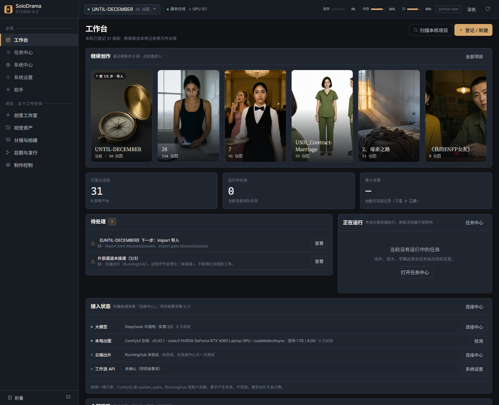
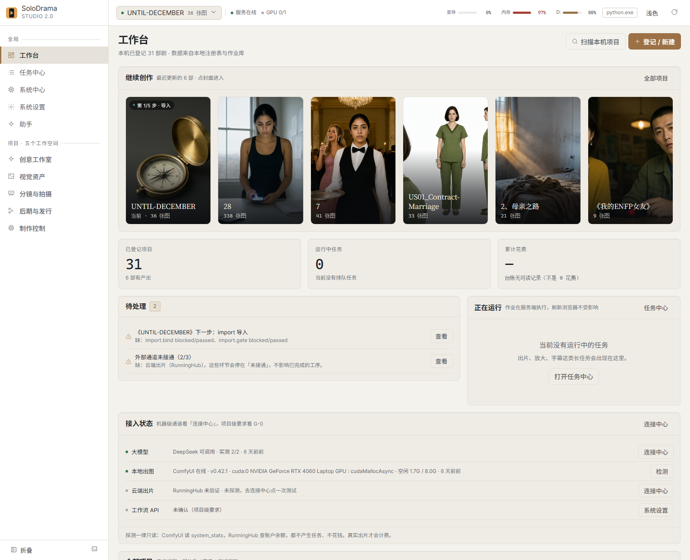
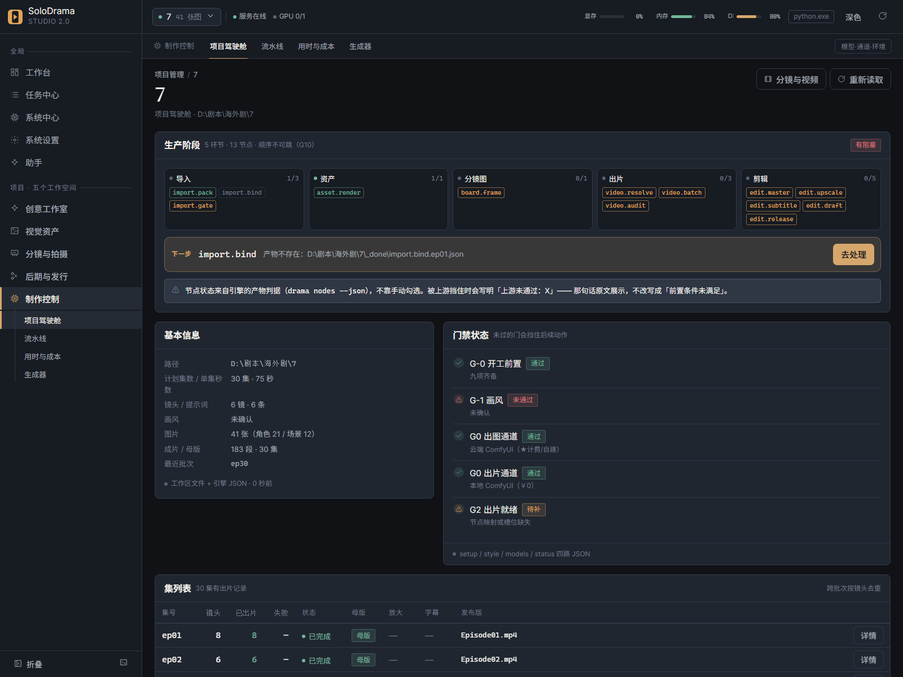
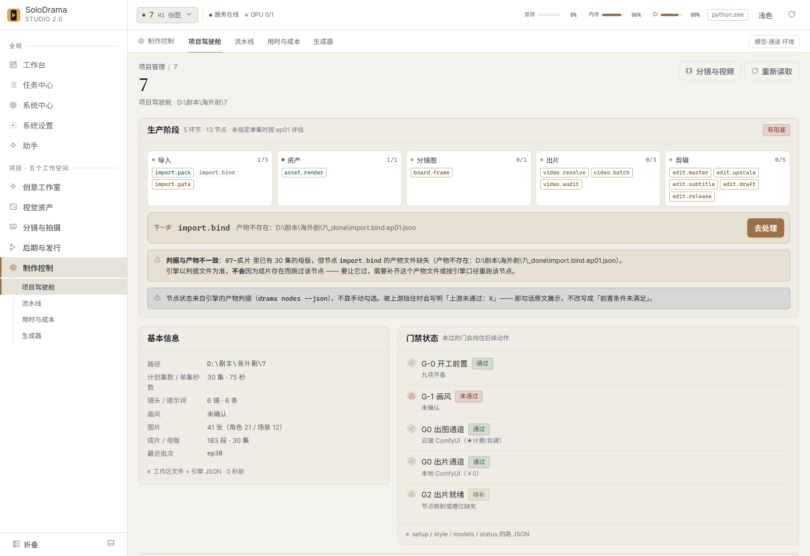
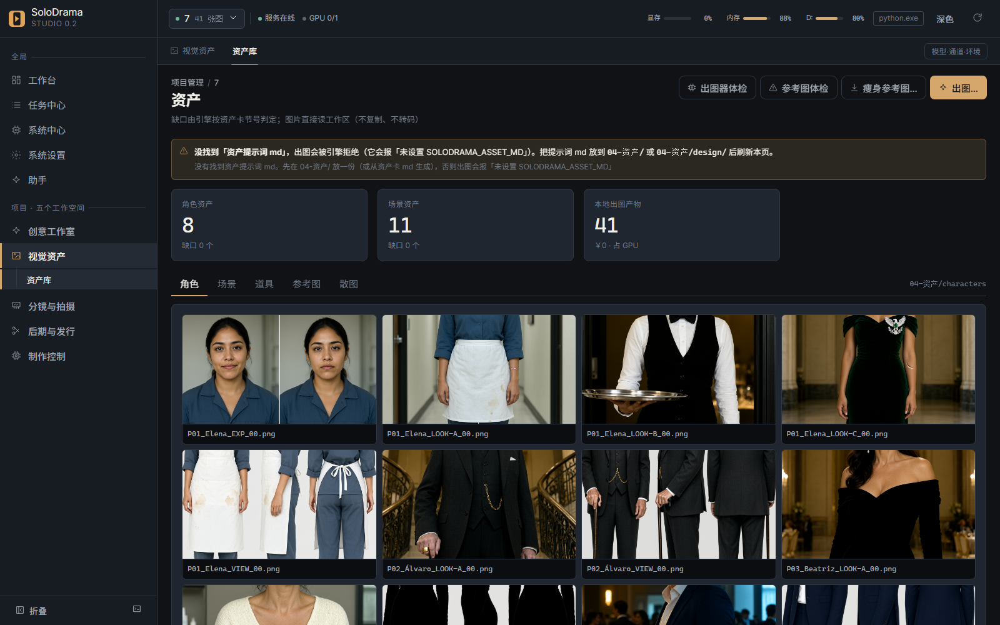
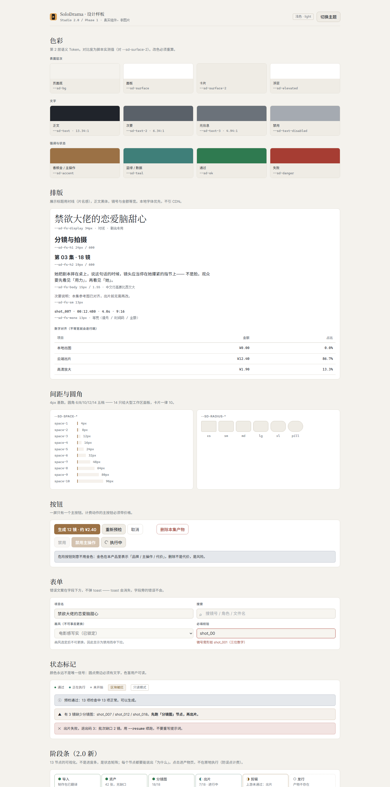

Phase 0 审计 → Phase 2 设计系统 → Phase 3 信息架构 / 首页 / 驾驶舱 / 分镜三栏。Phase 4 的提示词读写已完成，其余未开始。
下面每个数字都能追到命令输出或文件，没有估算值。
本机 Chrome headless 实拍，不是设计稿。点开可看原图。






色块读的是 tokens.css 的实时计算值 —— 本页直接引用了产品样式表。
审计：docs/architecture/（4 份）+ docs/upgrade/01–07
设计：docs/design/（8 份）
交付报告：docs/upgrade/phase-report-20261110.md（含 §13 §14）
#9B7145 白底 4.34:1，低于 AA。你拍板「品牌忠实优先」，
探针里永久只剩这一条 LOW。
| 问题 | 影响 | 归属 |
|---|---|---|
| 旧格式提示词保存必被拦：30 集提示词都不是六段式，改一个字也会被判「缺 6 段」 | 要走「仍然保存」两步；这是门禁本意（H3 六段是契约），不是 bug | 引擎口径 |
| 六段式分支无真实数据验证 | 本机 0 个项目是六段式，结构 chip 只有代码路径跑过 | 待真实样本 |
本机 0 个项目有 data/<ep>/ 契约层 | 驾驶舱切集看不出差异，判据读的是契约文件不是成片目录 | 数据现状 |
创作版本对比无入口：备份 .bak_<时间戳>.md 在磁盘上，界面看不到 | 「改坏了能回滚」实际上只能去文件夹翻 | T20 |
| 生成无草稿区：模型写歪就直接覆盖正文（有备份） | 要先进草稿确认再落盘，属引擎侧改动 | T21 |
| 资产工作室页面仍是旧的 | 视觉与新框架不匹配 | Phase 3 |
| 移动端断点未重测 | 窄屏可能错位 | Phase 5 |
| 选项 | 内容 | 说明 |
|---|---|---|
| H · 视觉资产工作室 | 角色档案 / 场景设定集的视觉化，图片优先 | 资产是核心卖点 |
| I · 生产控制 | 通道 / 预检 / 作业 / 成本台账按现有业务逻辑接成工作台 | 能力已有，缺界面 |
| J · 版本对比 | 只读列出 .bak_ + 左右对照 | 补掉 T20，创作页才闭环 |